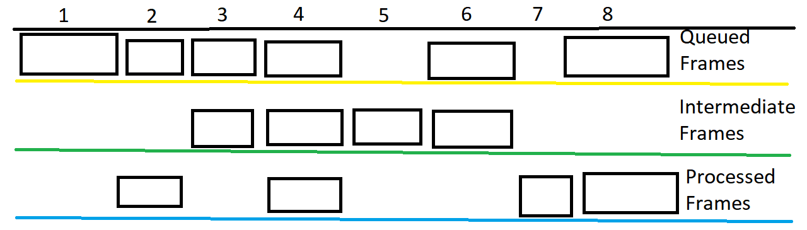
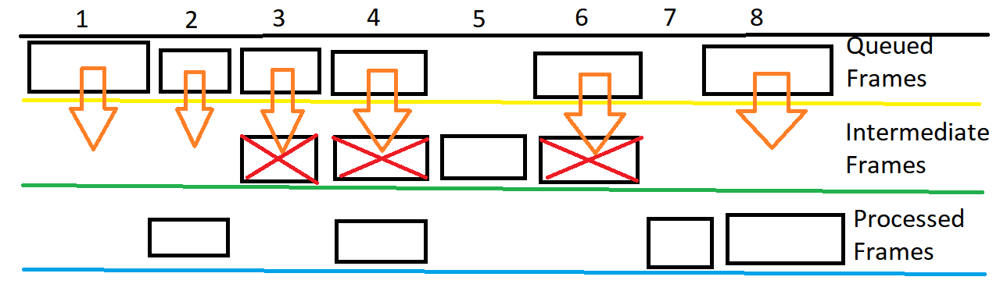
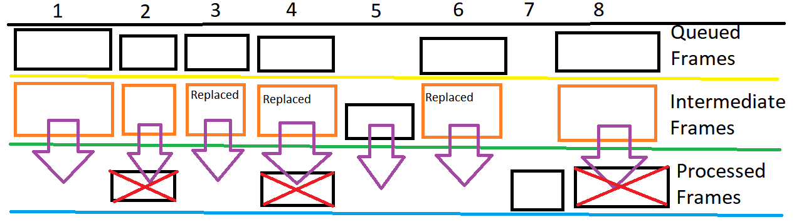
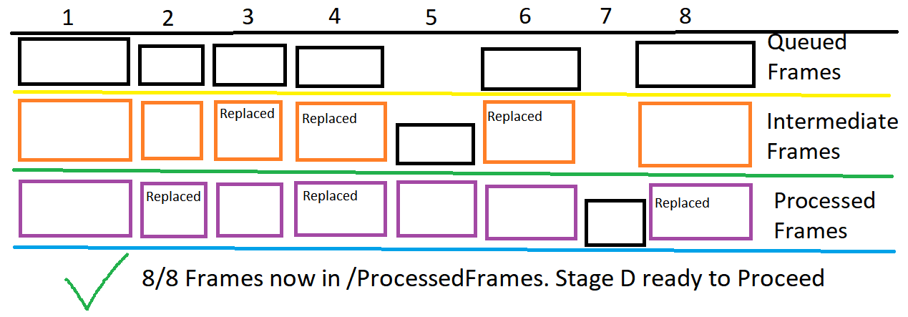

QuickScripts - Assisting Functions
Overview
The Quickscripts tab of
FoxTrotUpscaler gives 4 scripts that
should help with a couple different things related to upscaling. Some
prepare files for the Upscale Setup, while others build on what the
main function creates. These all are supposed to be somewhat quick
commands, so they do
not get extensively monitored by FTUServer.
Here is a guide on all the scripts.
De-interlacing Script
Description:
De-interlaces Video using
YADIF (yet another De-interlacing
filter) in FFMPEG.
The de-interlaced video should appear in ImportVideo labeled correctly,
ready to be used in Upscale Setup
Options:
- Show Name
De-interlacing
script uses video with a UNIQUE file name of "Interlaced_<EP
###>_<SHOWNAME>.<EXTENSION>"
- Episode
Number
Instructions:
- Make sure the Interlaced video exists to extract from, in
ImportVideo
- Fill in values from Options section.
- Execute the Script.
Audio
Extraction Script
Description:
Scans Input
Video file for all Audio Streams, asks User which is desired, and
extracts the audio stream as the desired codec. File is then placed in
/ImportAudio, properly labeled, and ready for use in "Upscaler Setup".
Will in future update add a second Stream Extractor for Subtitles.
Parameters given are only for re-encoding as "aac" files. Other extensions are not extensively tested.
Options:
- Show Name
- Episode
Number
- Export Codec
- Codec Parameters (if required)
Instructions:
- Make sure Video to extract from exists in ImportVideo
- Fill in values from Options section.
- If you want to just copy the stream, choose the "copy" codec, and ignore the Parameters
If you want to re-encode the stream, choose the desired codec, and enter in applicable codec Parameters.
- Execute the Script, by deciding if you want to extract a single
Audio stream, or extract every possible audio stream in the video.
Codec/Parameter selection will be applied to all Audio streams, if the "Extract All" method is chosen.
- If multiple Audio streams are found, and the user desired a single one of them, a prompt will appear
asking the user which stream to extract. Otherwise it will extract the
single existing stream, or terminate if no streams found.
Select in the prompt which stream to extract, or wait for
completion.
Manual Retouching Script
Description:
Allows for surgical
upscaling of a few
errored/corrupted/missing frames without requiring other burdens from
using Upscale Setup. Can choose to execute Stage B, C, or B then
C. This script is expected to be run after running at least Stage A of
a Process, all the way up until the next Upscale is started. Any errors
noticed in the upscale during this time, can be corrected with this
method. Manipulates files in /QueuedFrames /IntermediateFrames and
/ProcessedFrames, which are shared by Upscale Setup.
Possible to delete many frames
if done incorrectly, and Overwrite
protections are removed in Preferences.
Options:
- Stage Selection: This is where you can choose how you want
to upscale
Waifu2x (Stage B): /QueuedFrames -> Stage B ->
/ProcessedFrames
RawTherapee (Stage C): /IntermediateFrames -> Stage C ->
/ProcessedFrames
Waifu2x + RawTherapee (Stage B + C): /QueuedFrames -> Stage B
-> /IntermediateFrames -> Stage C ->
/ProcessedFrames
- Abort Process: Use this button to terminate the upscale.
- Time Estimate: Similar to the one in Upscale Setup, will
give a estimate for how much longer the current STAGE will take.
Instructions:
- Organize the frames in the 3 frame folders, so that one
frame only exists in the right folder corresponding to the Stages you
want to run the frame through.
Here is a detailed explanation for how to do this.
- If you want to run a frame through either just Stage B,
or both Stage B and C; leave the frame in /QueuedFrames
- If you want to run a frame through just Stage C, leave a
frame in /IntermediateFrames but make sure to remove it from
/QueuedFrames
- After this, if a frame exists in /QueuedFrames, delete it
from the other two folders
- After this, if a frame exists in /IntermediateFrames,
delete it from /ProcessedFrames
- If you did everything right, then there should only exist
one version of each frame in one of the folders. If you start the
script, you should get no Overwrite warning error, and at the end,
/ProcessedFrames should contain the latest version of every single frame
If you wish to omit steps
3-4, you can disable the overwrite protection. This is not recommended.
If the user makes an error in organizing the frames, you could delete
more then intended, and waste time re-upscaling them.
Be careful about deleting frames, if you delete every single version
of a frame from all 3 folders, attempting to run Stage D will crash
because of the missing frame.
- Select the Stages you want to
re-upscale.
- Execute the Script
- On Completion, /ProcessedFrames should
contain every frame. The script will label everything correctly and you
should be able to execute Stage D right after.
Explanation of what happens
This Script can be complicated to setup properly, or
understand how it
works. This section aims to explain in more detail what it does, so it
can be utilized effectively.
Looking at you
Ivo...
Before the Script starts,
your 3 frame folders should look something like this.

Each of the squares is a frame file, either png or tif,
and each column represents the same frame, but different version that
reached a different stage of upscaling. Lets assume someone in this
example already deleted frames in the folders, and wants to run both
Stage B + C. The picture shows that they want to run Frame 1,2,3,4,6,8,
through Stage B + C, we know this because these frames exist at all in
/QueuedFrames. It appears that Frame 5 should only be run through Stage
C, we know this because it exists in /IntermediateFrames but not
/QueuedFrames. Frame 7 will be left alone, because it only exists in
/ProcessedFrames. In this example, it shows that the user did not
delete frames as told in Steps 3-4 of the Instructions above. This is
not recommended but will be used in this example to show what happens.
Starting the Script, certain frames will be deleted because Overwrite
Protection was disabled, and then Stage B will execute on every frame
in /QueuedFrames. It will look like this.

Every Orange arrow is a Frame that will be Upscaled by Stage B, and
placed into /IntermediateFrames. If the frame already existed in
/IntermediateFrames it would be overwritten, which hopefully was the
User's intention.
After Stage B completes, Stage C will begin. It will retouch every
image in /IntermediateFrames, both new and old, and place them in
/ProcessedFrames. It will look like this.

Exact same process as before, except with different input and output
folders. In this examples, more frames were replaced, that the user
hopefully reviewed to ensure was acceptable.
When the script completes, your folders should look like this.

Stage D is only concerned about having all the frames in
/ProcessedFrames, which is why the gaps are acceptable. In a normal
upscale, the exact same thing would occur without gaps, since every
frame in /QueuedFrames would be extracted from a source Video, with the
rest of the folders being empty. If this is the case, it would be
better to just run a Normal Upscale starting with Stage B or C, since
it would immediately start Stage D at the end. That is why this script
is better for correcting errors, and then starting a normal Upscale on
Stage D.
Re-muxing Script
Description:
This script will take a
completed upscale video, extract the video from
it, and recombine it with the selected Audio/Subtitle Streams and meta
data desired. You can also cut out a piece of the upscaled video using
the Duration and Master Offset options. Very helpful to make changes to
a Video without re-upscaling it, or using an external program.
Script will make a copy, not
delete original video, will be labeled "Remuxed_<LANG
### >_<EP
###>_<SHOWNAME>.<EXTENSION>"
Options:
Every single option for
this Script is copied from Upscale Setup. Refer to that document's "How to Start a Process" section to
learn about the options.
Instructions:
- Make sure all necessary files are properly labeled and in the correct folders.
Script expects videos in the /Export folder, and labeled "Upscaled_<LANG ###>_<EP ###>_<SHOWNAME>.<EXTENSION>" - Fill in all the Options as described in Upscale Setup
- Execute the Script